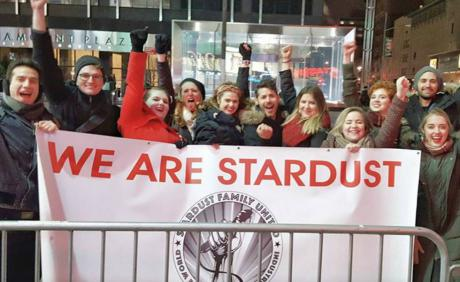

“Proud to be part of a singing union”: the struggle at Ellen's Stardust Diner
Submitted on Mon, 03/13/2017 - 5:07pm
By Chilli Sauce - Libcom.Org, March 5, 2017
Ellen's Stardust Diner is a New York institution, a place where Broadway actors not only wait tables, but sing show tunes while they're at it. It's also the site of an ongoing labor dispute that has seen mass firings, strikes, protests, and picket lines that have turned away early morning food deliveries.
The employees at Ellen's have been organizing with the IWW for much of the past year. Their union, Stardust Family United, has been out on the streets, raising their voices and raising their fists to defend and improve working conditions.
Many Stardusters have worked at the restaurant on and off for years. To hear them tell it, Ellen's used to be a pretty nice place to work. Management were accommodating when it came to taking time off to be in a show. And despite the large numbers of wait staff and the time they take off for stage work, Ellen's was a tight-knit community. It was a place where workers developed their talents and built friendships that spanned decades.
All that changed last year when new management was brought in.
Managers ceased to be accommodating when it came to taking time off. Workers who raised safety issues or complained of sexual harassment were ignored or, worse yet, pushed out of the restaurant. Long-term workers, some whom had racked up years of service in the double digits, were unceremoniously let go.
So the idea came about to form a union. Workers contacted a couple of local unions and the IWW proved the most responsive, quickly arranging an organizer training for the Stardust staff. The workers found the IWW's model of solidarity unionism, which stresses rank-and-file control and a direct action approach to organizing, to be an asset to the solidarity they'd already built up in the workplace.
For a while, organizing occurred under the radar. Issues of health and safety were raised and workers used the internal communication system to pressure management. Workers also organized a successful march on the boss to get their tip bucket back and it was after this point the workers decided to go public as a union. The venue through which they chose to do this: The New York Times.
Workers hadn't filed for a labor board election, instead demanding owner Ken Sturm deal with them directly.
At first, management sounded like they'd be co-operative. But that didn't last. Not long after the union went public, Sturm hired a union-busting firm and fabricated reasons to fire over 15 perceived ringleaders of the union drive.
Workers responded with a singing strike, refusing to perform during their shift.
Then something quite remarkable happened: the restaurant closed its doors for the day. Not even September 11th or Hurricane Sandy had forced Ellen's bosses to close, but the workers demonstrated that just by staying silent they had the power to bring the restaurant to a standstill.
Following the illegal firings, the campaign really heated up. Workers reached out to new hires and rebuilt the union’s numbers. They successfully fought back against the boss’s attempt to make them learn new material in their own unpaid time. They got management to return to proper staffing levels. An unstable piece of stage furniture, which had resulted in worker injuries, was finally replaced.
A few months later, Ken Sturm engaged in another round of illegal mass firings. This latest round of firings means that, of the roughly 70 servers who were employed at the time the union was formed, approximately half have been fired. Again, these workers had worked there for between six and 20 years. The National Labor Relations Board has demurred on the union’s request for an injunction.
The firings have not stopped the campaign, however. It was after all of these firings that Stardusters staged their most militant action: a twelve-hour strike during the busy Friday evening rush.
In a separate job action, workers refused to be filmed by a Brazilian film crew who had struck some kind of deal with management. They spontaneously created a petition and presented it to management on the floor, who was forced to comply.
Some of the participants in these actions have only worked at the diner for a matter of weeks. All of this is a testament to how successfully the workers have built a culture in the restaurant of standing up for themselves and each other.
The workers have fought back hard with actions that have included fired staff: weekly musical protests, a sip-in (in which union supporters come to the restaurant, leave a nice tip and purchase nothing), phone and Facebook blasts, and targeting other businesses associated with owner Ken Sturm.
At one point, management even brought in some outside musicians to try to drown out the sound of the Saturday evening pickets. However, it was discovered that these were union musicians who, after a quiet word, joined in on a few protest songs and shortly thereafter took their leave. Management hasn't tried that tactic since.
Recent developments have seen Stardust staff turn away deliveries with their always musical picket lines.
Beyond their regular job actions, Stardust Family United also holds regular “Stardust after Dark” fundraisers and has launched their own Facebook page and website. They've also linked up with other IWW restaurant workers, in particular building a relationship with the Burgerville Workers Union in Portland.
The campaign even has its own theme song, written by a member of Stardust Family United and recently covered by Tom Morello as a tribute to the dedication and creativity of the Stardust workers.
The Stardust workers understand they're in it for the long haul, despite the unlawful, draconian responses from management. They're determined to keep fighting and keep singing until they've won.
For more information, check out the links above. If you're in New York City, check their Facebook page for protest or fundraising events. If you're outside of New York, please consider making a donation:
https://www.youcaring.com/stardust-family-united-634720/donate?utm_source=widget#wp
Dozens of workers have now been fired and New York is an expensive city, so anything you can spare would be a huge help. Alternatively, why not have your local union branch or political group organize a fundraiser to support these inspiring workers?